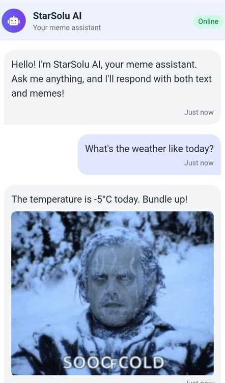

Entrepreneurial Product Leader
Founder with a Master's in Computer Science, transforming complex challenges into market-leading, AI-driven products. I build, launch, and scale ventures from the ground up.
View My VenturesHow I Drive Product Success
Ideation & Strategy
I identify high-impact opportunities by analyzing market trends, user research, and competitive landscapes to establish a clear product vision and strategy aligned with core business goals.
Data-Driven Decisions
I leverage quantitative and qualitative data to define product requirements, prioritize features, and make informed decisions, ensuring every step is backed by evidence and focused on user value.
Full-Lifecycle Execution
As a founder, I have hands-on experience across the entire product lifecycle—from ideation and technical design with engineers to launch, iteration, and scaling in the market.
Cross-Functional Leadership
I build consensus and establish a shared vision across technical and non-technical teams. My experience includes collaborating with engineers, designers, and stakeholders to ensure seamless execution.
Technical Acumen
With a background in Computer Science and AI, I effectively communicate with engineers, understand technical constraints, and contribute to architectural decisions to build robust and scalable products.
Adaptability & Ambiguity
My entrepreneurial journey has trained me to thrive in ambiguous environments. I excel at breaking down complex problems, adapting to change, and finding creative solutions to unexpected challenges.
My Entrepreneurial Ventures
SafyPix - AI Anti-Piracy Solution
As Founder, I led the creation of an AI-powered solution to combat the $97B film piracy market. I drove the product from concept to a deployable system with 99.5% detection accuracy, focusing on a privacy-first architecture.
CareerBuild AI - Career Development Platform
As Co-Founder & Product Manager, I guided this AI-driven platform from conceptualization to MVP launch. I implemented Agile methodologies to ensure rapid iteration and on-time delivery, and secured a place in the prestigious Launch Accelerator program.

StarSolu.com - Visual Meme Chatbot
As the founder, I pioneered the first intelligent AI meme chatbot. I leveraged sentiment analysis and CNN image classification to create a unique, context-aware conversational experience, integrating robust API functionality for dynamic responses.
Sampada - AI Investment Assistant
I conceived and developed this AI-powered FinTech platform to democratize financial insights. I designed a multi-agent system for unbiased recommendations and created a product analytics dashboard to enhance user transparency.